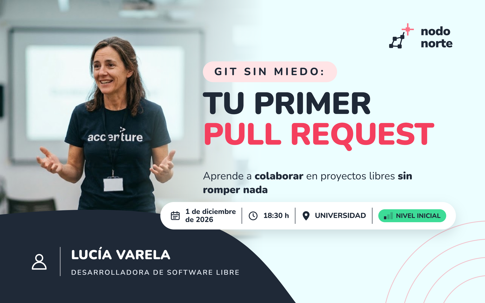

Sobre nosotros
Nodo Norte es una comunidad tecnológica sin ánimo de lucro de A Coruña. Nos reunimos el primer martes de cada mes para aprender juntos con charlas, talleres y obradoiros, y después hay networking con comida y bebida.
Cercanía, aprendizaje compartido, software libre y que nadie se sienta fuera de lugar.
Próximo evento

Nodo Norte
Git sin miedo: tu primer pull request
Una charla práctica para perder el miedo a Git. Martes 1 de diciembre de 2026, a las 18:30, en la Universidad, con Lucía Varela, desarrolladora de software libre. Nivel inicial.